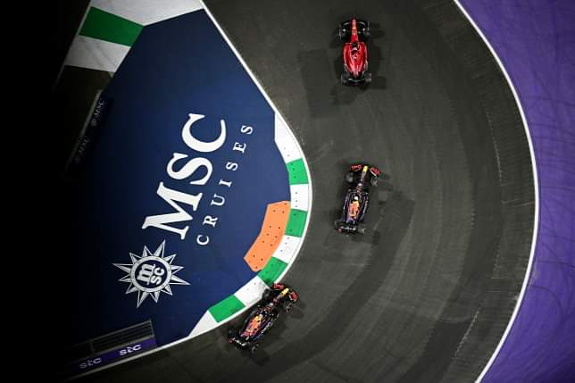
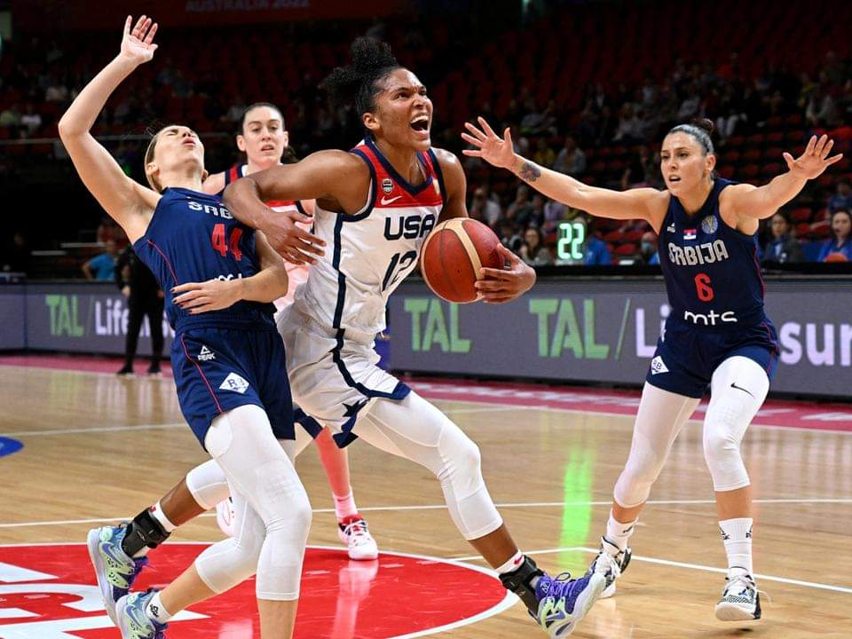

Sport hírek egy helyen!
"A Szingapúri Nagydíjat három év után rendezik meg, az utcai pálya és a hőség nagyon nehézzé teszi a versenyzők feladatát az éjszakában. Fernando Alonso csúcstartóvá válik..."
"A másodikban pedig a szerbek csupán tíz pontot tudtak szerezni, miközben az Egyesült Államok újabb 25-öt szerezve már a nagyszünetben eldöntötte a meccset..."
"Kedden befejeződtek a Nemzetek Ligája harmadik kiírásának csoportküzdelmei. A 156 mérkőzésen 409 gól született, ami 2.63 meccsenkénti és 34 percenkénti átlagot jelent. Az A-ligából Horvátország, Spanyolország, Olaszország és Hollandia jutott a jövő nyári négyes döntőbe, míg a magyar válogatott nem csupán megőrizte tagságát az elitosztályban..."